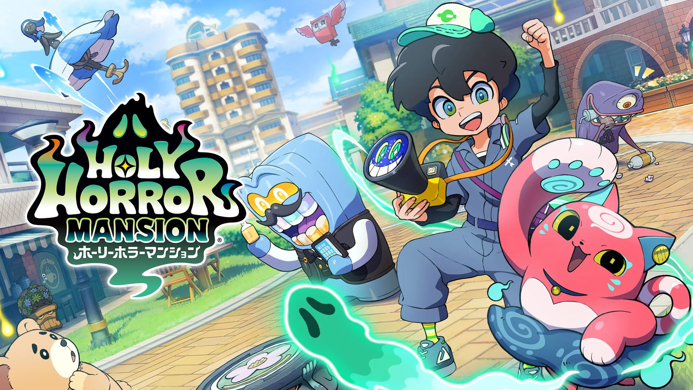
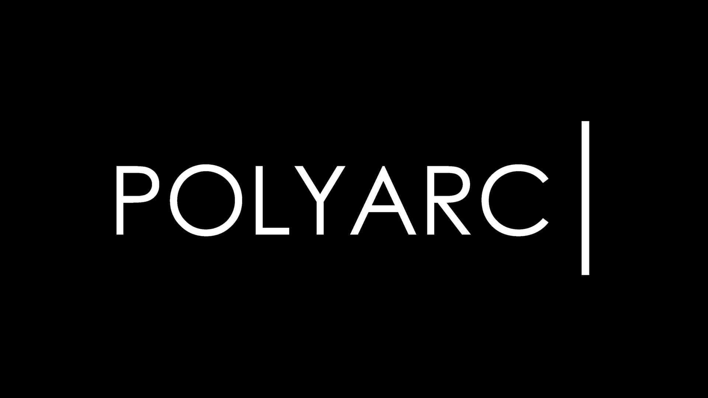

Codex harness 托管 API 公测；记 Agent 轴，不当 MCP/Skill 推荐。
- 日期
- 2026-09-10 补入
- 库
- AI
- 类型
- Agent 产品
今日无新旗舰。今日无新 MCP/Skill 推荐。主线是昨窗漏刊的 OpenAI Agents API / GPT-Live-1 补入核，以及 LEVEL-5 Vision 雷顿 Remake 与 Holy Horror Mansion、胧村正怪奇谭定档；窗内独立作《深度求财：挖打撤》1.0 发售，Polyarc 关停。二次元 / 游戏开发空库未出 Tab。
判定：补刊 Agent 产品双发 + LEVEL-5 批次撑起密度；旗舰轴安静日写清「无」。不复述 DeepSeek-V4.1-Flash / Elderfield / Magical Blush / Nintendo Direct / Fable / Astra。
最高 Attention 集中在 Agents API 与 LEVEL-5 Vision；语音 API 与定档/发售次之。
总览卡只给最高 Attention，细节进分库。
Codex harness 托管 API 公测；记 Agent 轴，不当 MCP/Skill 推荐。
雷顿初代 Remake 与 Holy Horror Mansion 均锁 2027；昨扫未入刊今日补入。
全双工语音 API，$0.05/分钟；非文本旗舰。
Steam 简中店名已核；2027-02 初发售。
Steam 2026-09-11 正式发售翻牌。
今日无新旗舰。今日无新 MCP/Skill 推荐。补入 OpenAI Agents API（Agent 产品）与 GPT-Live-1（语音 API）。
判定：Agent 基础设施日；旗舰轴明确写「无」。
OpenAI 于 2026-09-10 将驱动 Codex 的托管 harness 以 Agents API 公测形式开放：持久会话、上下文压缩、子代理并行、MCP/自定义工具，可选 OpenAI 托管或合作方沙箱。昨扫已见但未入刊，今日补入核。

关注度 · 🔥🔥🔥。来源：OpenAI · Introducing the Agents API；docs changelog Sep 10。
今日无新 MCP/Skill 推荐条目。
同日 OpenAI 把 ChatGPT 全双工语音层 GPT-Live-1 放到 API：前端语音 $0.05/分钟，推理与工具可委派后端文本模型或 Agents API。不当今日旗舰。

关注度 · 🔥🔥。来源：OpenAI · GPT-Live-1 in the API。
今日无新旗舰 / 无官方新档 GA。观察清单：Grok 4.7 仍未发（docs 仍 4.6）。
行业主线是 LEVEL-5 Vision 补刊与胧村正怪奇谭定档；独立轴新增《深度求财：挖打撤》1.0；Polyarc 关停。今日无独立游戏观察以外的展会片单新轴。
判定：补刊 + 独立发售撑起行业库；TGS 前夜不预写片单。
LEVEL-5 Vision 2026 II「梦」（2026-09-10）公布《雷顿教授与不可思议的小镇 Remake》2027 登陆 PS5 / Switch 2 / Switch / Steam，并公布新作 Holy Horror Mansion（2027，PS5 / Switch / Steam；TGS 2026 可玩）。昨扫已录但未入刊，今日补入。


关注度 · 🔥🔥🔥。来源：Layton 官站；Gematsu · Remake；Gematsu · Holy Horror Mansion。
Vanillaware × Marvelous 将《胧村正》与元禄怪奇谭合集强化为《胧村正怪奇谭》；Steam 简中店名已核。Steam 标 2027-02-03，Gematsu 记欧美主机 2027-02-04。
关注度 · 🔥🔥。来源：Steam · 胧村正怪奇谭；Gematsu。
Soda Game Studio / Infini Fun 合作挖矿撤离联机作于 2026-09-11 Steam 正式发售；店名简中「深度求财：挖打撤」。
关注度 · 🔥🔥。来源：Steam · 深度求财：挖打撤；Games Press 发售稿。
Polyarc 于 2026-09-11 宣布近 12 年运营后关停；近期作品为合集向《Moss: The Forgotten Relic》（多平台）。

关注度 · 🔥。来源：Gematsu · Polyarc。
今日无展会片单新轴。TGS 2026（9/17–21）未开不预写；Nintendo Direct / Zelda Direct / State of Play 已报长名单不复述。